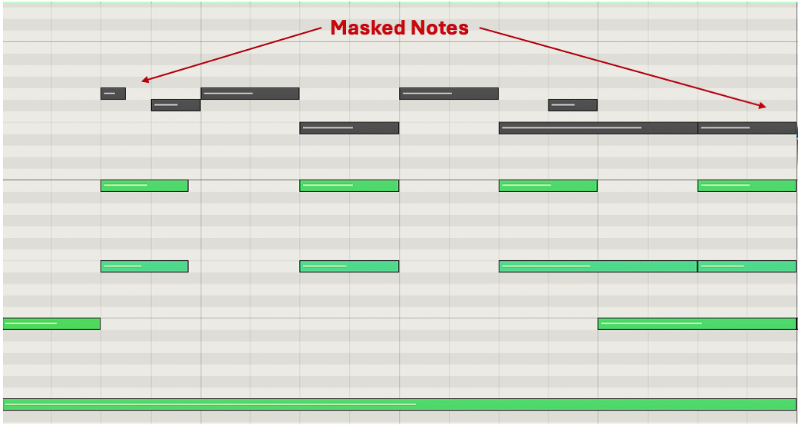

Rhapsody Refiner
A deep-learning symbolic music variator that supports creative ownership rather than replacing the musician.

// 01Overview
This project investigates the design and evaluation of a deep learning-based music variation system that supports creative ownership and active co-creation rather than replacing the musician. The central focus is preserving personal ownership and artistic identity in AI-assisted composition.
Rather than generating complete songs from prompts, this work explores how AI can extend and vary a musician's own ideas through fine-grained control over musical attributes, using masked prediction with MusicBERT. The primary users are practising musicians — songwriters, producers, jazz musicians, composers, and instrumentalists.
// 02Research questions
- How can AI systems support musicians while preserving creative ownership?
- How does a variation-based AI system function in ecological (real-world) composition settings?
- What tensions arise between technological capability and artistic identity?
- How can masked prediction enable controllable variation with strict attribute control?
// 03Approach
Rhapsody Refiner uses MusicBERT — a bidirectional transformer for symbolic music — combined with masked token prediction to enable controllable music variation.
Octuple Encoding
Each MIDI note is represented by 8 attributes (bar, instrument, pitch, position, velocity, duration, time signature, key), enabling attribute-level control without entanglement.
Masked Token Prediction
The system masks selected note attributes and predicts them autoregressively using MusicBERT. Masking is governed by a variation parameter determining how many notes are modified.
Strict Attribute Control
Users selectively vary pitch, beat placement, beat span, and dynamics. Only explicitly selected attributes are masked and predicted.
Logit Filtering
Ensures correct token types, with optional pitch-range constraints and optional key-fixing via soft scaling.
// 04Evaluation
Eight practising musicians (songwriters, jazz, producers) used Rhapsody Refiner for four weeks to compose a song. They kept reflective journals; system logs recorded usage; post-study semi-structured interviews were conducted. Data was analysed via inductive thematic analysis, prioritising ecological validity over lab control.
// 05Key outcomes
A tool for moments, not complete ideas
Participants rarely used full variations — they extracted small moments that sparked inspiration. The system worked as a spark generator, not a finished-composition engine.
Strong creative ownership
Because the system depends on the musician's input and refinement, ownership remained human-centred. Participants felt full control over compositional direction.
Imperfection drove co-creation
Messy outputs forced musicians to filter, refine, and shape — reinforcing authorship. Tools that require skill may better support practising musicians.
Identity & humanity in music
Participants were uncomfortable with prompt-based systems that threatened their sense of worth. Variation-based design avoided this by requiring human seed material.